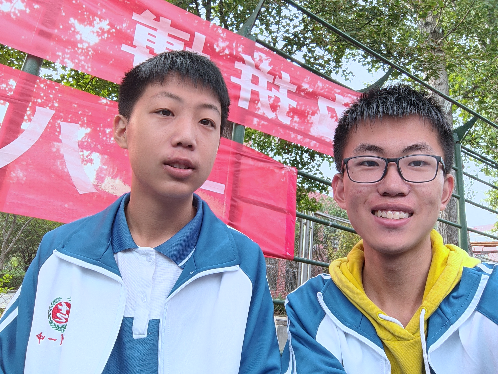

我就说点心里话吧，不知道从哪里开始说，我就想到哪里说到哪里吧。以前，我是个男同，兴许是家庭的原因和其它一些环境因素导致的罢，要知道，男同都不敢暴露自己的性取向，我也是这样，刚上高中的时候没什么熟人，你算是我第一个新认识的朋友罢，刚开始的一两个月左右和你关系都挺好的，你还经常玩直男的小把戏，我也就爱上你了（脸红），所以经常想和你合影，甚至感觉让你艹我也可以。那时候，你把我妈叫做“咱妈”，我真以为我们在谈恋爱，还说以后有了小孩就互认干爹干妈。记得那时活动课，和你一起回宿舍玩手机，我躺你身上，暖暖的，很舒服啊，很幸福啊，还说让我寒假去你家附近的小树林玩哈哈。一直以来，我都羞于自己男同的身份，很幸运遇到了你这样一个不讨厌男同的人。想起与你的点点滴滴，我都好快乐啊！说实在的，有的时候性欲真的很难控制，有时对你发骚，真的对不起。说来也惭愧，甚至前些日子，因为你偷偷落眼泪。然后说说选科的事情吧，我选物化地有三个原因，一是有你和挺多认识的人，毕竟我是个很难忍得住寂寞的人，二是这几科成绩不差，三是想着能不能转到老校后不和我前任同一个选科。前些日子，我让你等我然后我不等你，反而和陈勇志一块走，是因为你好几次都没等我而且你天天和吴星宇在一块，我实在生气才这样做。前几天洗澡又遇到你了，也没搭上话。谢谢你陪着我从男同走向了直男，陪我度过漫长岁月，我以后也不再是男同了。总之，你是我喜欢的最后一个男生了！或许，久日情侣到最后变不到老友吧！或许，我们真的渐行渐远了罢！写到这里，我不禁泪潸潸了。
最后 放一下《最佳损友》的歌词罢！
最后 放一下《最佳损友》的歌词罢！ 朋友 我当你一秒朋友 朋友 我当你一世朋友 奇怪 过去再不堪回首 怀缅 时时其实还有 朋友 你试过将我营救 朋友 你试过把我批斗 无法 再与你交心联手 毕竟 难得有过最佳损友 从前共你 促膝把酒 倾通宵都不够 我有痛快过 你有没有 很多东西今生只可给你 保守至到永久 别人如何明白透 实实在在 踏入过我宇宙 即使相处到 有个裂口 命运决定了 以后再没法聚头 但说过去 却那样厚 问我有没有 确实也没有 一直躲避的藉口 非什么大仇 为何旧知己 在最后 变不到老友 不知你是我敌友 已没法望透 被推着走 跟着生活流 来年陌生的 是昨日最亲的某某 生死之交当天不知罕有 到你变节了 至觉未够 多想一天 彼此都不追究 相邀再次喝酒 待 葡萄成熟透 但是命运入面 每个邂逅 一起走到了 某个路口 是敌与是友 各自也没有自由 位置变了 各有队友 问我有没有 确实也没有 一直躲避的藉口 非什么大仇 为何旧知己 在最后 变不到老友 不知你是我敌友 已没法望透 被推着走 跟着生活流 来年陌生的 是昨日最亲的某某 早知解散后 各自有际遇作导游 奇就奇在 接受了 各自有路走 却没人像你 让我 眼泪背着流 严重似情侣 讲分手 有没有 确实也没有 一直躲避的藉口 非什么大仇 为何旧知己 在最后 变不到老友 不知你又有没有 挂念这旧友 或者自己 早就想通透 来年陌生的 是昨日 最亲的某某 总好于 那日我 没有 没有 遇过 某某
